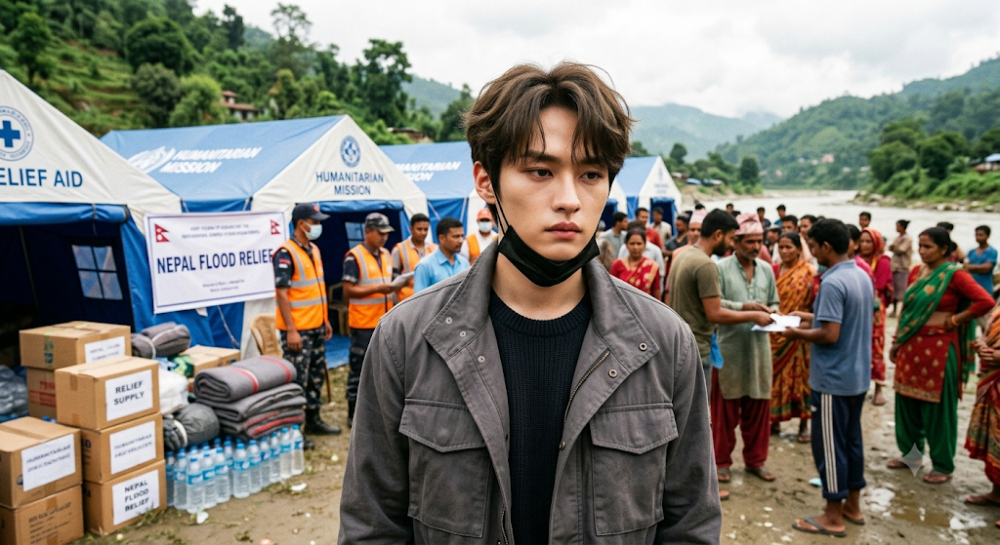

'দক্ষিণ কোরিয়ার জনপ্রিয় কে-পপ গ্রুপ স্ট্রে কিডসের সদস্য লি নো আবারও মানবিকতার নজির স্থাপন করেছেন। নেপালে ভয়াবহ বন্যায় ক্ষতিগ্রস্ত শিশু ও পরিবারগুলোর পাশে দাঁড়াতে তিনি ১০০ মিলিয়ন কোরিয়ান ওন অনুদান দিয়েছেন। বাংলাদেশি টাকায় এর পরিমাণ আনুমানিক ৮০ লাখ টাকার কাছাকাছি, আর মার্কিন মুদ্রায় প্রায় ৭২ হাজার ৬০০ ডলার।
লি নো এই অর্থ World Vision-এর মাধ্যমে গত ২৮ আগস্ট প্রদান করেন। তাঁর অনুরোধ অনুযায়ী, অনুদানের অর্থ নেপালের বন্যায় ক্ষতিগ্রস্ত শিশু ও পরিবারগুলোর জরুরি সহায়তা এবং জীবন-জীবিকা পুনরুদ্ধারে ব্যবহার করা হবে। বিষয়টি তার ব্যবস্থাপনা প্রতিষ্ঠান JYP Entertainment নিশ্চিত করেছে।
বন্যাদুর্গতদের জন্য খাবার, পানি ও আশ্রয়
World Vision জানিয়েছে, লি নোর দেওয়া অর্থ দিয়ে বন্যায় ক্ষতিগ্রস্ত মানুষের জন্য জরুরি খাদ্য ও পুষ্টি সহায়তা, অস্থায়ী আশ্রয়, নিরাপদ পানীয় জল এবং স্যানিটেশন ও স্বাস্থ্যবিধি সহায়তা দেওয়া হবে।
নেপালের সাম্প্রতিক ভয়াবহ বন্যায় অনেক পরিবার ঘরবাড়ি ও জীবিকার গুরুত্বপূর্ণ অংশ হারিয়েছে। এমন পরিস্থিতিতে দ্রুত প্রয়োজনীয় সহায়তা পৌঁছে দিতে আন্তর্জাতিক সংস্থা ও বিভিন্ন দেশ কাজ করছে। লি নোর অনুদানও সেই জরুরি মানবিক সহায়তার অংশ হিসেবে ব্যবহার করা হবে।
লি নোর আবেগঘন বার্তা
অনুদানের বিষয়ে লি নো জানিয়েছেন, কঠিন সময়ের মধ্য দিয়ে যাওয়া মানুষের জন্য তাঁর এই সহায়তা সামান্য হলেও শক্তির উৎস হয়ে উঠুক—এটাই তাঁর আশা। একই সঙ্গে তিনি বন্যায় ক্ষতিগ্রস্ত মানুষ এবং ঘটনাস্থলে উদ্ধার ও ত্রাণকাজে নিয়োজিত সবার দ্রুত স্বাভাবিক জীবনে ফেরার প্রত্যাশা ব্যক্ত করেছেন।
তার এই বক্তব্যে ভক্তদের মধ্যেও ব্যাপক ইতিবাচক প্রতিক্রিয়া দেখা গেছে। একজন আন্তর্জাতিক তারকা হয়েও দুর্যোগের সময়ে ক্ষতিগ্রস্ত মানুষের পাশে দাঁড়ানোর সিদ্ধান্তকে অনেকেই তার মানবিক মূল্যবোধের প্রকাশ হিসেবে দেখছেন।
দাতব্য কাজে দীর্ঘদিনের সম্পৃক্ততা
লি নোর জন্য এ ধরনের মানবিক উদ্যোগ অবশ্য নতুন নয়। তিনি দীর্ঘদিন ধরে World Vision-এর সঙ্গে যুক্ত এবং বিভিন্ন মানবিক কর্মকাণ্ডে সহায়তা করে আসছেন। ২০১৪ সাল থেকেই তিনি বিদেশি শিশুদের সহায়তায় পৃষ্ঠপোষকতা শুরু করেন বলে বিভিন্ন প্রতিবেদনে উল্লেখ করা হয়েছে।
এর আগেও তিনি শিশু, গুরুতর অসুস্থ রোগী এবং প্রাণী কল্যাণসহ বিভিন্ন খাতে বড় অঙ্কের অর্থ অনুদান দিয়েছেন। ২০২৪ সালে বিশ্বব্যাপী খাদ্যসংকট মোকাবিলায় World Vision-এর একটি কর্মসূচিতেও তিনি ১০০ মিলিয়ন ওন দান করেছিলেন।
শুধু সংগীত নয়, মানবিক কাজেও আলোচনায়
স্ট্রে কিডস বর্তমানে বিশ্বজুড়ে অন্যতম জনপ্রিয় কে-পপ গ্রুপ। ব্যস্ত সংগীত ক্যারিয়ারের পাশাপাশি দলের সদস্যদের বিভিন্ন সামাজিক ও মানবিক কর্মকাণ্ডও নিয়মিত আলোচনায় আসে।
লি নোর এবারের অনুদানও সেই ধারাবাহিকতার অংশ। নেপালের ভয়াবহ বন্যায় যখন ক্ষতিগ্রস্ত পরিবারগুলোর জরুরি খাদ্য, নিরাপদ পানি ও আশ্রয়ের প্রয়োজন, তখন তাঁর এই সহায়তা বাস্তব প্রয়োজন মেটাতে ব্যবহৃত হবে।
বিশ্বজুড়ে কে-পপ তারকাদের জনপ্রিয়তা যেমন বাড়ছে, তেমনি তাদের সামাজিক ভূমিকা ও মানবিক কর্মকাণ্ডও ভক্তদের কাছে গুরুত্বপূর্ণ হয়ে উঠছে। লি নোর এই উদ্যোগ সেই দৃষ্টিকোণ থেকেও বিশেষ তাৎপর্যপূর্ণ।
ভক্তদের প্রশংসা
লি নোর অনুদানের খবর প্রকাশের পর সামাজিক যোগাযোগমাধ্যমে তাঁর ভক্তরা প্রশংসা করছেন। অনেকেই মনে করছেন, জনপ্রিয়তার পাশাপাশি সমাজের সংকটময় সময়ে মানুষের পাশে দাঁড়ানোর এমন উদ্যোগ অন্যদেরও মানবিক কাজে উৎসাহিত করতে পারে।
নেপালের বন্যায় ক্ষতিগ্রস্ত মানুষের জন্য তাঁর এই অনুদান কতটা কার্যকরভাবে পৌঁছায়, সেটিই এখন গুরুত্বপূর্ণ। তবে নিজের পক্ষ থেকে দ্রুত সহায়তার হাত বাড়িয়ে দিয়ে লি নো যে মানবিক বার্তা দিয়েছেন, তা ইতোমধ্যেই আন্তর্জাতিক বিনোদন অঙ্গনে আলোচনার বিষয় হয়ে উঠেছে।
সূত্র: JYP Entertainment, World Vision এবং আন্তর্জাতিক সংবাদমাধ্যম।